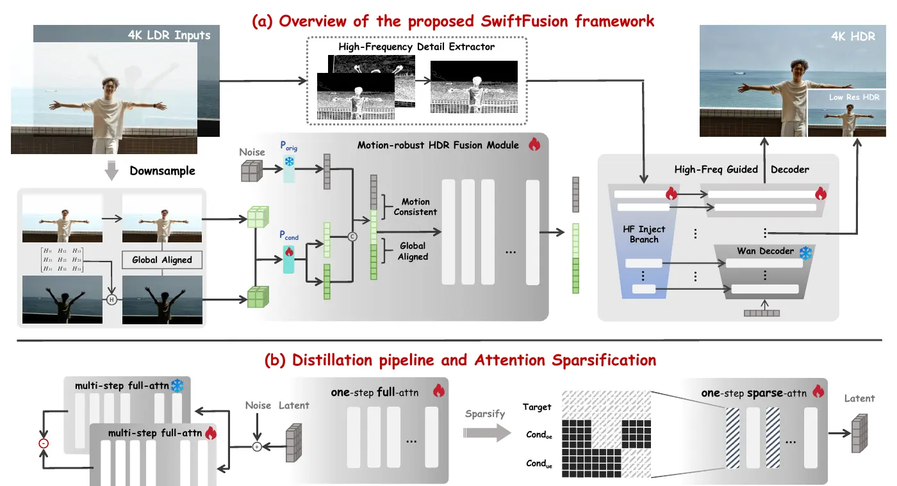

Abstract
High Dynamic Range (HDR) imaging remains a fundamental challenge in camera system design. Although recent diffusion-based methods have achieved promising visual quality for HDR fusion, they still suffer from significant limitations in robustness to dynamic scenes and prohibitively slow inference speeds, which make them difficult to apply to high-resolution HDR fusion in practice.
To address these issues, we propose SwiftFusion, an efficient generative framework designed for high-resolution HDR fusion in complex dynamic scenes. It decomposes 4K HDR fusion into a motion-aware low-resolution fusion module with video priors and a high-frequency-guided decoding module for faithful 4K reconstruction. We further introduce Condition-Aware Sparse Attention and distill the flow-matching backbone into a one-step generator.
Extensive experiments demonstrate excellent deghosting capability and structural fidelity in highly challenging dynamic scenarios. SwiftFusion generates a 4K HDR image in only 2.2 seconds, achieving a 198× inference speedup compared with existing generative HDR approaches.
Method
We perform motion-aware HDR fusion at low resolution using a pretrained video prior, then inject reliable high-frequency cues while directly decoding the result to 4K. One-step distillation and condition-aware sparse attention make the pipeline efficient.

Visual Comparison
Select a scene and click a thumbnail to switch results. Use “Blink Inputs” to reveal the motion between the two exposure moments.
Dancer · SwiftFusion (Ours)
Keyboard: press 1, 2, or 3 to switch results.
BibTeX
@article{bian2026swiftfusion,
title = {SwiftFusion: Towards Motion-Robust and Efficient 4K HDR Fusion},
author = {Bian, Yichen and Chen, Zixuan and Wang, Yujin and Cai, Xin and
Guo, Shi and Zhuang, Junhao and Gu, Leilei and Xue, Tianfan},
journal = {ACM Transactions on Graphics},
volume = {45},
number = {6},
year = {2026},
doi = {10.1145/3842557}
}